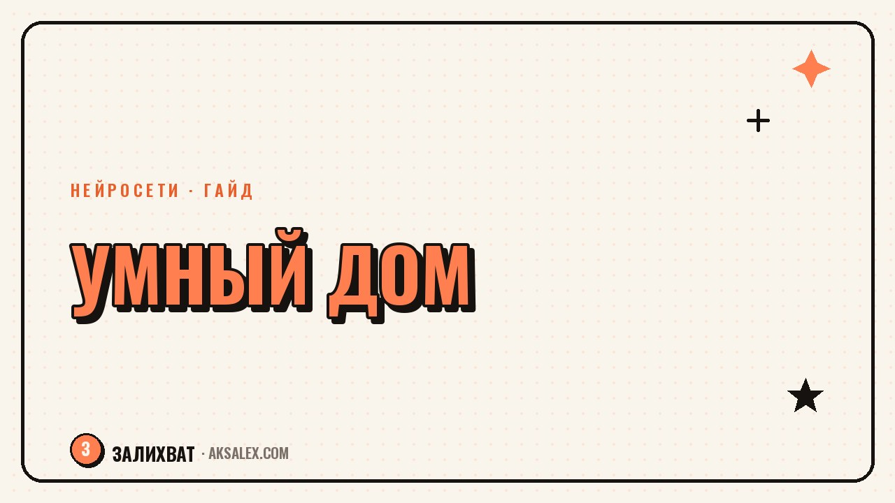

Нейросети для умного дома: с чего начать новичку

Слово «умный дом» пугает многих: кажется, что для него нужны инженерное образование, толстый кошелёк и неделя на настройку проводов. На деле всё скромнее. Нейросети внутри колонок, камер и приложений уже делают основную работу за тебя - учатся на твоих привычках и экономят электричество без лишних команд. Разберёмся, с каких устройств начать и где новички чаще теряют деньги и нервы.
Зачем умному дому нужны нейросети
Раньше умный дом - это были реле и таймеры: свет включался в 19:00, потому что ты так настроил, и ни секундой позже. Нейросети поменяли логику: система смотрит на твоё реальное поведение и подстраивается сама. Термостат учится, когда ты встаёшь зимой по будням, и прогревает комнату заранее, а не по будильнику.
Разница ощутима быстро. Без нейросети ты вручную собираешь сценарий «приход домой»: свет, музыка, тёплый пол. С нейросетью система сама предлагает объединить эти действия в один сценарий по геолокации или голосовой команде - и так экономит не только время, но и нервы.
С чего начать: минимальный набор без переплат
Начинать умный дом с полного набора - частая ошибка новичков. Купленные одним махом хаб, десяток розеток, камеры и термостат часто простаивают, потому что разобраться во всём сразу невозможно. Лучше стартовать с одного сценария, который решает реальную проблему в твоей квартире, и расширяться по мере привыкания.
- Голосовая колонка с ассистентом - центр управления и точка входа во все сценарии
- Одна-две умных розетки для техники, которую забываешь выключать
- Датчик движения в коридоре или прихожей для автоматического света
- Камера у двери, если важна безопасность при частых отлучках
- Термостат или умный радиатор, если отопление регулируется вручную
Такой набор закрывает основную часть бытовых задач: свет, который не нужно щёлкать руками, техника, которая не остаётся включённой, уведомление, если кто-то подошёл к двери. Дальше можно добавлять датчики протечки или умные шторы - но только если видишь в этом конкретную пользу.
Какие задачи нейросети решают лучше всего
Сильнее всего нейросети проявляют себя там, где нужно распознавание и предсказание, а не обычное включение-выключение.
Три направления с заметной разницей
- Энергосбережение - термостат учитывает расписание, погоду и скорость остывания комнаты, а не только держит заданную температуру
- Безопасность - камера с ИИ отличает человека от качающейся ветки и своего кота от чужого, поэтому присылает пуш только когда стоит посмотреть
- Голосовые сценарии - фраза «я дома» запускает сразу набор устройств, а не требует отдельной команды на каждое
Жёсткие сценарии «если-то» приходится переписывать вручную при каждой перемене привычек. Нейросеть вместо этого собирает контекст - время суток, последние действия, погоду - и подстраивает сценарий сама.
Сравнение популярных экосистем
Для русскоязычного рынка выбор обычно сводится к нескольким экосистемам. У каждой свои сильные стороны, и смешивать их без нужды не стоит - лучше выбрать одну основную платформу и строить сценарии вокруг неё.
| Экосистема | С чем совместима | Голосовое управление | Нужен хаб | Кому подойдёт |
|---|---|---|---|---|
| Яндекс Дом (Алиса) | Яндекс-станции, Zigbee и Wi-Fi устройства многих брендов | Да, хорошо понимает бытовые фразы | Не обязательно | Для старта без лишних настроек |
| SberDevices (Салют) | Экосистема Sber, SberBox и партнёры | Да | Зависит от устройства | Если уже в сервисах Sber |
| Aqara Home | Zigbee-датчики и реле, сторонние интеграции | Через внешние ассистенты | Да, фирменный | Для гибкой настройки датчиков |
| Tuya / Smart Life | Бюджетные устройства разных брендов | Через интеграции | Не всегда | Для бюджетного старта |
Безопасность и приватность: о чём молчат в рекламе
Умный дом собирает данные о твоих привычках: когда ты дома, когда спишь, какую музыку слушаешь. Камеры и микрофоны - самые чувствительные точки: стоит проверить, где хранится запись, локально или в облаке, и кто кроме тебя имеет доступ к аккаунту.
Умный дом - это не про то, чтобы доверить технике всё подряд, а про то, чтобы она делала рутину, оставляя тебе право в любой момент вмешаться и всё отключить.
Отдельный Wi-Fi для устройств, двухфакторная авторизация в приложении, регулярные обновления прошивок и отключение камер в приватных зонах - пять минут настройки, которые избавляют от большинства реальных проблем.
Частые ошибки новичков
- Покупка устройств из разных несовместимых экосистем без проверки интеграции
- Слишком сложный сценарий сразу - лучше начать с одного действия и усложнять постепенно
- Игнорирование обновлений прошивки, из-за чего страдает безопасность и стабильность
- Полный отказ от ручного управления - выключатель должен работать, даже если пропал интернет
- Камеры без настройки приватности и ограничения доступа
Если держать в голове эти пять пунктов, умный дом перестаёт быть источником стресса и становится тем, чем задумывался - фоновым помощником, который снимает рутину, а не добавляет новую.
Частые вопросы
Нужен ли отдельный хаб для умного дома с нейросетями?
Не всегда. Многие устройства работают напрямую через Wi-Fi и голосовую колонку без дополнительного хаба. Хаб нужен в основном для Zigbee-датчиков и при большом количестве устройств.
Какая нейросеть для умного дома подходит новичку без технических навыков
Проще начать с экосистемы на базе голосовой колонки - Яндекс Дом или SberDevices. Настройка через приложение интуитивна, а сценарии предлагаются автоматически.
Сколько стоит умный дом с нейросетями для старта
Минимальный набор из колонки, пары розеток и датчика движения обходится в разумную сумму и окупается за счёт экономии электричества. Дорогие комплексные решения нужны далеко не всем.
Безопасно ли доверять камерам с ИИ-распознаванием лиц дома
Безопасно при соблюдении базовых правил: проверенный производитель, двухфакторная авторизация и понимание, где хранится запись. Камеры в приватных зонах, вроде спальни, лучше не ставить вовсе.
Можно ли совмещать разные экосистемы умного дома
Технически можно через универсальные интеграции, но на старте это усложняет настройку. Разумнее выбрать одну основную платформу, а другие бренды подключать только при подтверждённой поддержке.
Раз тема оказалась полезной, вот что почитать следующим. Блог в Yappy с нуля: формат короткого вертикального видео, первые шаги и темы, которые заходят на площадке.
Читать статью →а не вручную